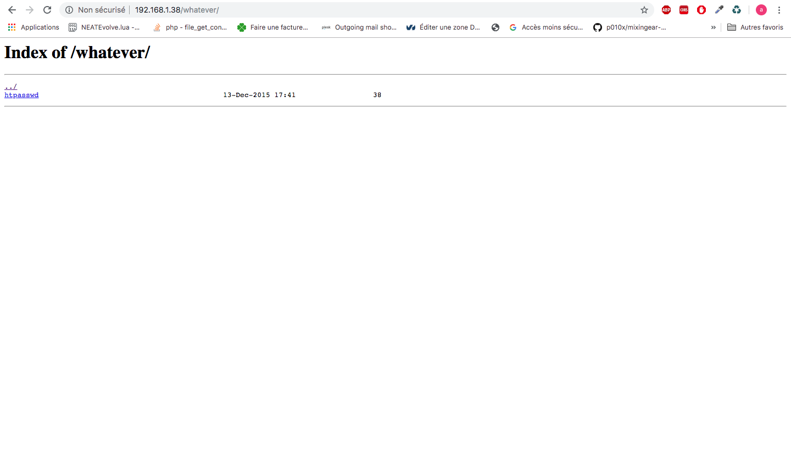
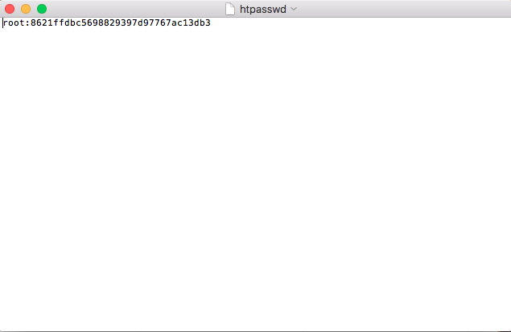
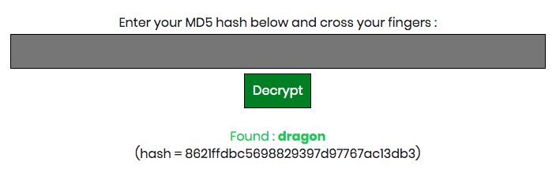
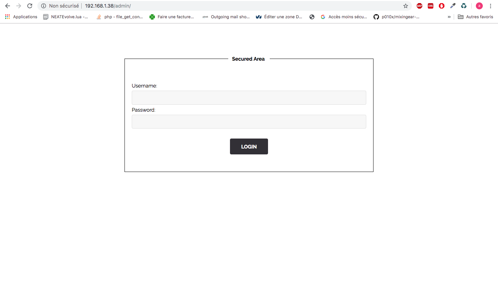

On vas sur le fichier robots.txt
Le robots.txt est un fichier texte placé à la racine du site web.
Ce fichier est destiné à interdire aux robots des moteurs de recherche l’indexation de certaines zones du internet.
On vas dans le dossier whatever
On click sur le fichier htpasswd ou est stocker le mdp pour acceder a l'espace admin
On decrypt le md5 du mot de passe, on obtient : dragon
On vas sur la route admin et on rentre en username root et en mot de passe dragon
On arrive sur l'espace admin
Faire un system avec des routes et des sessions et enregister le mdp dans la bdd